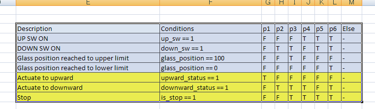
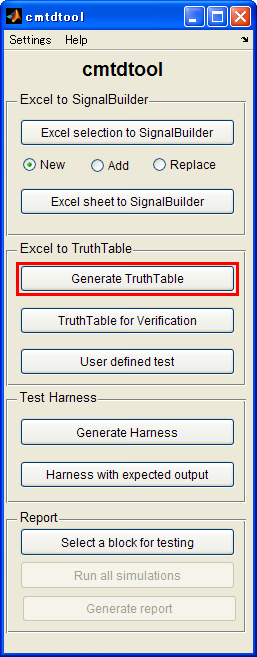
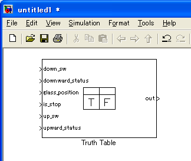
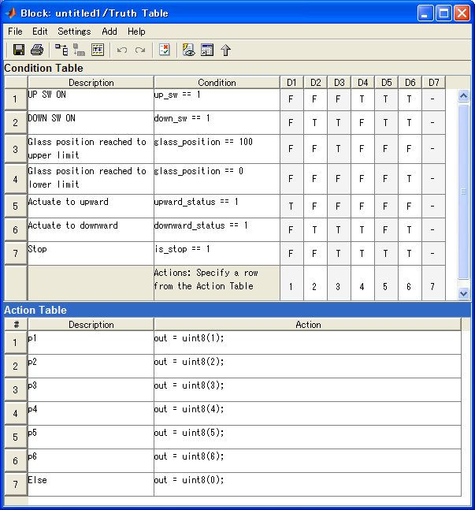
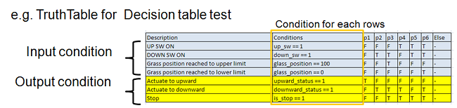
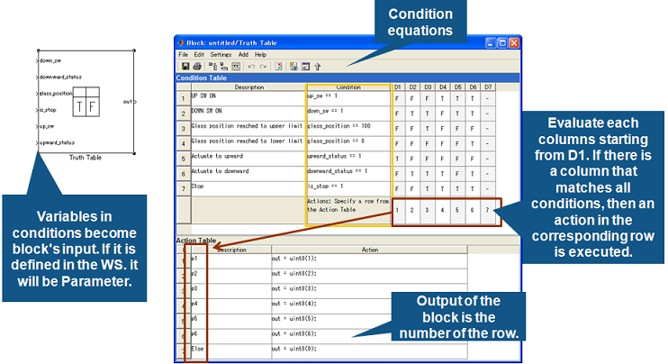
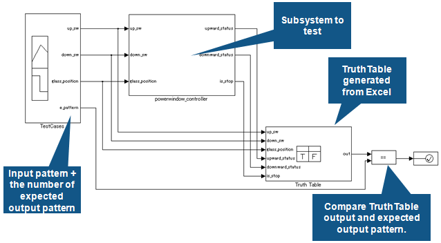

Generate Truth Table block from Excel
- Supported by MATLAB R2007a or later
- Requires Simulink® and Stateflow®.
Contents
Overview
(1) Write TruthTable in Excel and select a region to import.

(2) Click [Generate TruthTable] button.

(3) TruthTable block is generated. (Stateflow needed)

(4) TruthTable written in Excel is represented in TruthTable block

Excel writing format
- List up True / False combinations of Input and Output conditions in each columns.
- Using this TruthTable, user can verify that the combinations of input and output patterns match with outputs from controller subsystem. If there is no Input-Output pattern listed in the TruthTable, you will find the pattern is unexpected.

TruthTable block details
- Variables in conditions become block's input. If it is defined in the WS. it will be Parameter.
- Condition equations: Evaluate each columns starting from D1. If there is a column that matches all conditions, then an action in the corresponding row is executed.

Expected model structure

Rule for writing TruthTable
- 1st column "Description": Used as comments in the model. Do not affect for simulation.
- 2nd column "Conditions": Specify conditions corresponding to the 1st column. You can write MATLAB equation including arithmetic operator, logical operator, relational operator, and so on.
- 3rd column and after: Specify T (Truth) / F (False) / - (don't care) in each columns and rows.
- The last column (Else): The default case when there was no column that match to specified T/F/- combination. The TruthTable block returns 0 if the it corresponds to "Else" condition.
Note
- Any strings that can be accepted as variable name of MATLAB are set as block's inputs automatically.
- If the strings are defined as variables in MATLAB base workspace, they are set as Parameter rather than block's inputs.
Open cmtdtool_sampledata_en.xls in cmtdtool's install directory.
- Select "E3:M10" cell in "TruthTable" tab.
- Click "Generate TruthTable" in cmtdtool GUI.
- Check that there is Truth Table in a new model.
- Run the following commands and you will see that the same operation can be done by API call .
xls2TruthTable('cmtdtool_sampledata_en.xls','TruthTable','E3:M10');